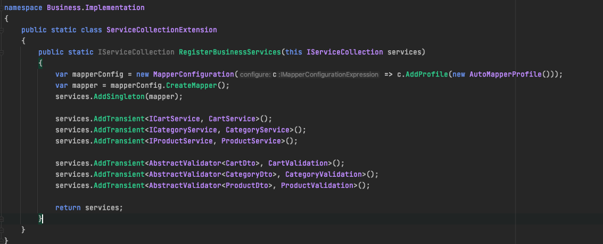
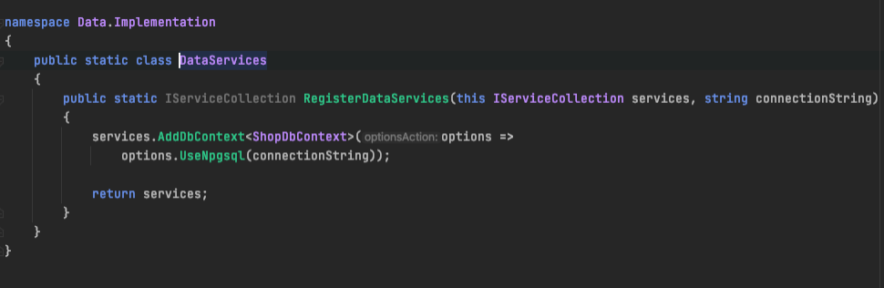
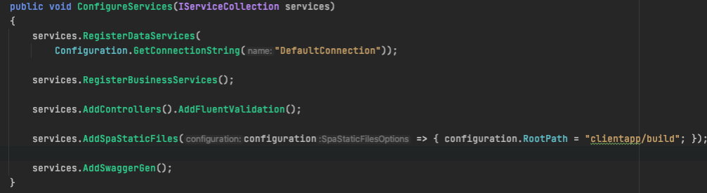

Тема: ІНВЕРСІЯ УПРАВЛІННЯ (IOC)
Мета: Придбати практичні навички роботи з Інверсія управління (IoC).
- Постановка задачі:
- 1. Покрити програмну реалізацію використанням підходу Інверсія управління (IoC).
Наведемо повну діаграму класів нашого застосунку

Наведемо діаграму варіантів використання нашого застосунку

Наведемо діаграму станів нашого застосунку

Наведемо діаграму послідовності нашого застосунку

Наведемо діаграму компонентів нашого застосунку

Використання Інверсія управління (IoC)
Наприклад, у випадку традиційного програмування, головна функція програми може викликати функцію із бібліотеки, щоб відобразити список доступних команд, і запросити користувача вибрати одну з них. Бібліотека поверне вибрану опцію як результат виклику функції. Цей стиль використовувався у текстових інтерфейсах. Наприклад, поштовий клієнт може показати екран з командами для завантаження нових листів, відповіді на поточний лист, розпочати новий лист і т. д., а виконання програми буде заблоковане допоки користувач не натисне клавішу, щоб обрати команду. Натомість, у випадку інверсії управління, програма пишеться із використанням програмного каркаса, який знає загальні поведінкові і графічні елементи, такі як віконний інтерфейс, меню, керування мишкою тощо. Користувацький код «заповнює пробіли» у каркасі, такі як надавання таблиці елементів меню і реєстрація підпрограм для кожного елемента, але відслідковування дій користувача і виклик пов'язаної підпрограми є завданням каркаса. У прикладі поштового клієнта, каркас може слідкувати за клавіатурою і мишкою і викликати команду, обрану користувачем, також одночасно з цим моніторити мережевий інтерфейс, щоб помітити прибуття нового повідомлення і оновити екран коли з'являється мережева активність. Цей самий каркас можна використати як скелет для програми електронних таблиць або текстового редактора. З іншого боку, каркас нічого не знає про веб-оглядачі, електронні таблиці, текстові редактори; втіленням їх функціональності займається користувацький код. Інверсія управління несе важливу ідею, що повторно використовний код і завдання-залежний код розробляються незалежно, хоча й діють разом. Програмні каркаси, callback'и, планувальники, цикли подій і впровадження залежностей є прикладами шаблонів, що слідують принципу інверсії управління, хоча термін найчастіше вживається в контексті ООП.
Теорія до реалізації Інверсія управління (IoC)
Інверсія управління (IoC) - важливий принцип об'єктно-орієнтованого програмування, що використовується для зменшення залученості (взаємодії) в комп'ютерних програмах. Також рішення архітектурної інтеграції, яке спрощує розширення системи, в якій потік управління програмою контролюється фреймворком. Його можна назвати набором рекомендацій, які дозволяють розробляти і реалізовувати програми з використанням слабкої прив'язки окремих компонентів. Тобто, щоб слідувати принципам инверсионного управління, нам необхідно реалізувати компоненти, які відповідають за одну конкретну задачу, компоненти повинні бути максимально незалежними один від одного, компоненти не повинні залежати від конкретної реалізації один одного.
Файлова структура проекту


Програмний код з реалізацією інверсії управління (IoC)
За впровадження залежностей та розподілення зв'язків для бізнес-шару відповідає клас ServiceCollectionExtension:
За впровадження залежностей та розподілення зв'язків для дата-шару відповідає клас DataServices:
А також дуже важливо прописати у файлі StartUp наступний код для того щоб також розмежувати шари:
Код классу Program

Код классу StartUp


Папка з проектом
Завантажити папку з проектомЗапуск ехе-файла
Завантажити програмуВисновки
В цій лабораторній роботі ми здійснили вивчення та впровадження в наш програмний продукт Інверсія управління (IoC). Також використали це для для зменшення залученості (взаємодії) в комп'ютерній програмі.